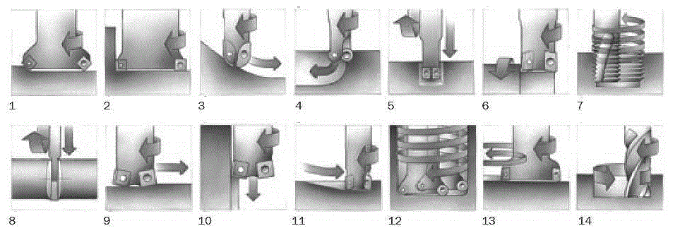

В настоящее время фрезерование является широко универсальным методом обработки выполняемым на различных фрезерных станках. В течение нескольких последних лет наряду с усовершенствованием металлорежущих станков произошло значительное расширение области применения фрезерного инструмента. Поэтому сегодня выбор способа обработки на многоосевом оборудование неоднозначен. В дополнение к традиционным областям использования фрез добавились такие как изготовление отверстий, обработка карманов и выборок, обработка поверхностей вращения, резьбофрезерование и т.д. Инструментальная оснастка также постоянно дорабатывается с целью повышения производительности, надежности и качества обработки как в отношении инструмента с механическим креплением пластин, так и в области цельнотвердосплавного инструмента.
Фрезерование – это резание материала инструментом, имеющим главное движение вращение и хотя бы одно движение подачи. Фрезы обычно являются многолезвийным инструментом. Фрезерование - эффективный метод обработки, при котором каждая из режущих кромок фрезы снимает одинаковое количество материала, ограниченное возможностями по формированию и эвакуации стружки. Наиболее часто фрезерование применяется для обработки плоских поверхностей. Но также быстро растет роль фрез в обработке сложных криволинейных поверхностей на обрабатывающих центрах и станках многоцелевого назначения.
На рисунке приведены основные типы фрезерных операций с точки зрения формы обрабатываемой поверхности и способа перемещения инструмента:
1-торцевое фрезерование; 2-фрезерование уступов; 3-профильное фрезерование; 4-фрезерование карманов; 5-фрезерование пазов; 6-фрезерование поверхностей вращения; 7-резьбофрезерование; 8-отрезка; 9-фрезерование с большими подачами; 10-плунжерное фрезерование; 11-фрезерование с врезанием; 12-винтовая интерполяция; 13-круговая интерполяция; 14-трохоидальное фрезерование